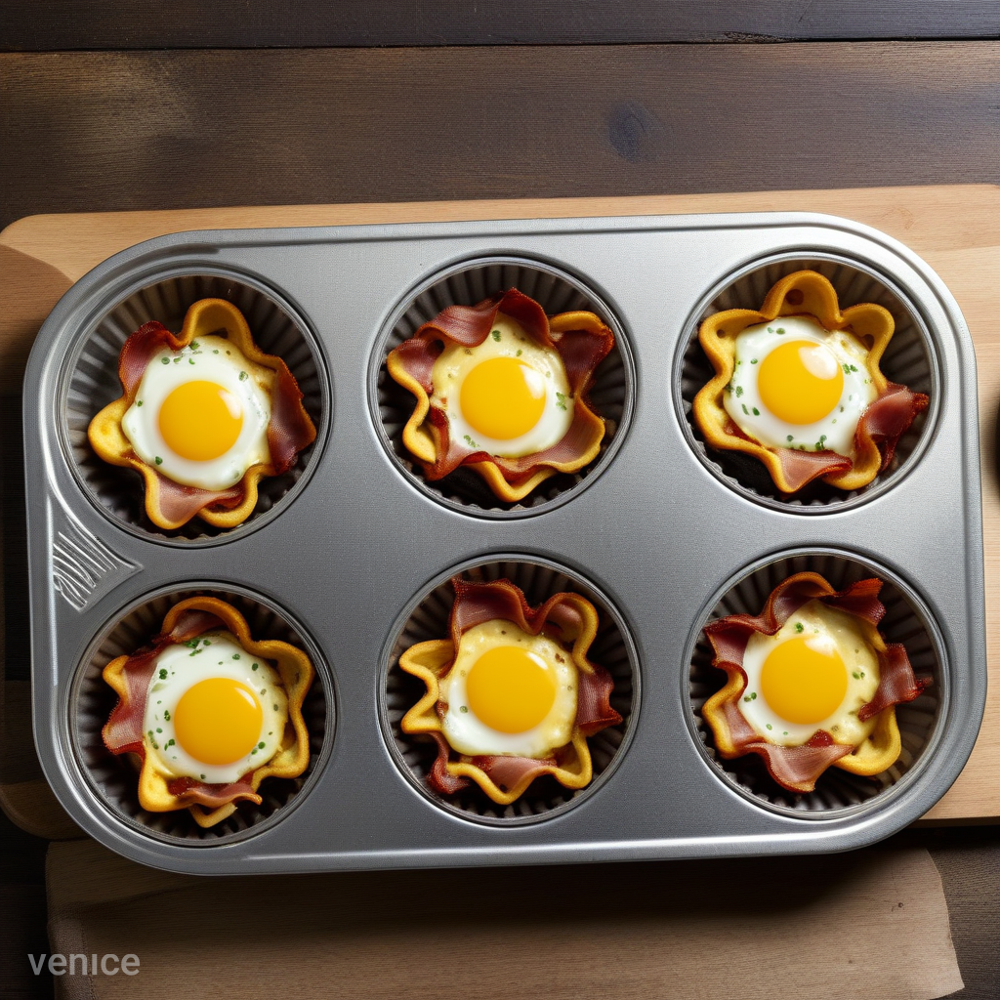

Bacon, Egg, And Cheese Cups

SERVES 4 / PREP TIME: 10 minutes / COOK TIME: 30 minutes
Ingredients:
- 8 bacon slices
- 3 tablespoons salted butter
- 10 eggs
- 2 teaspoons sea salt
- 1 teaspoon freshly ground black pepper
- 1/2 cup shredded cheddar cheese
Steps:
- Preheat the oven to 375°F. Line a baking sheet with
parchment paper and place the bacon on it. Cook for 15
minutes, flipping at the halfway point.
- Meanwhile, grease a 12-cup muffin tin throughly with
the butter.
- In a large bowl, whisk the eggs until beaten. Add the salt,
pepper, and cheese. Whisk until combined. Divide the
mixture evenly atop each egg cup.
-
Remove the bacon from the oven. (It should be about three-
quarters cooked at this point.) Chop into small pieces
and sprinkle evenly atop each egg cup.
-
Bake for 10 to 13 minutes or until browned and set.
Cool for 1 to 2 minutes on a wire rack before removing
the egg cups from the tin. (You may need to run a knife
around the edges to help get them out.)
-
Serve hot or store in an airtight container in the
refrigerator for up to 3 days.